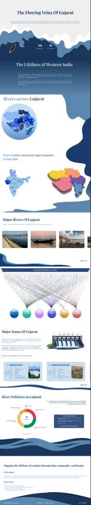
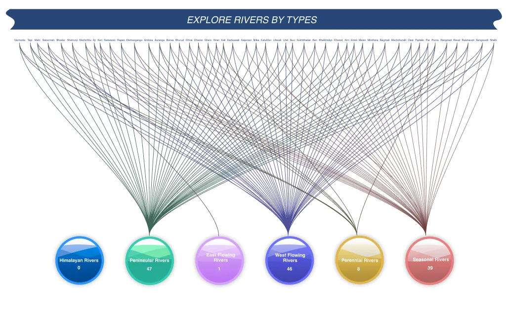
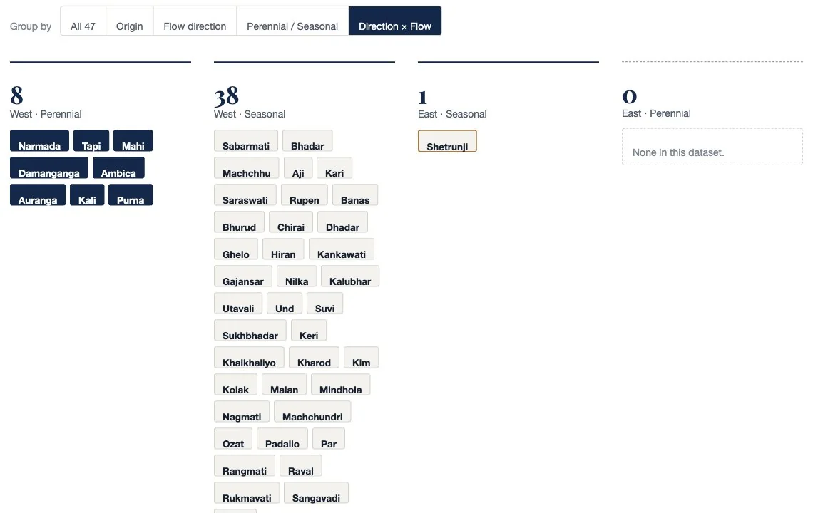
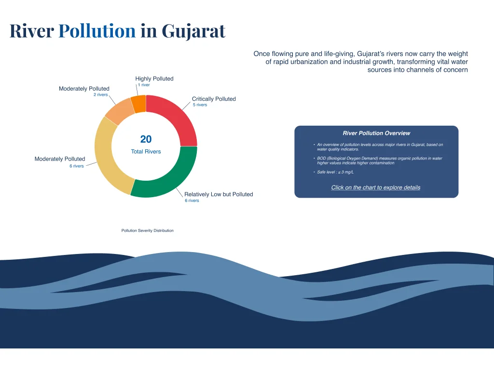
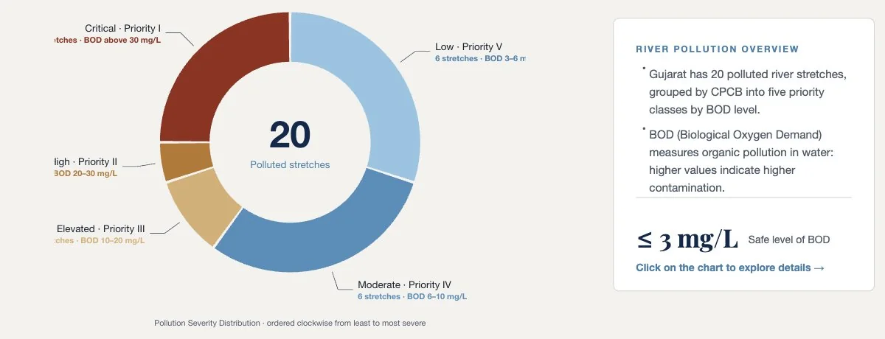
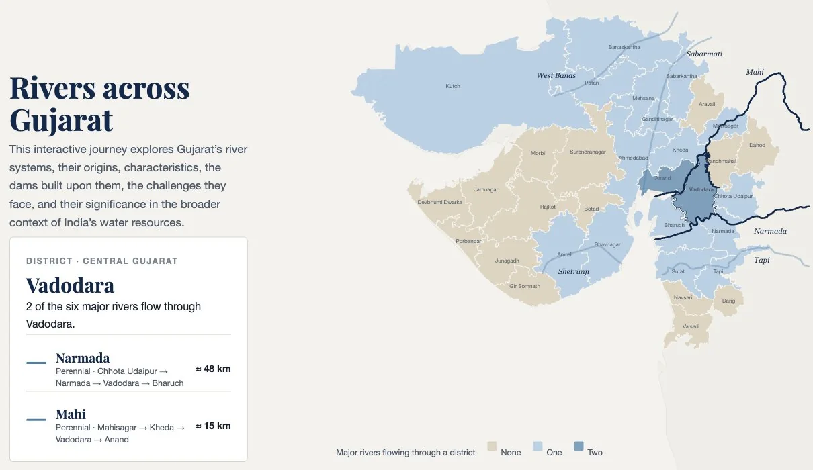
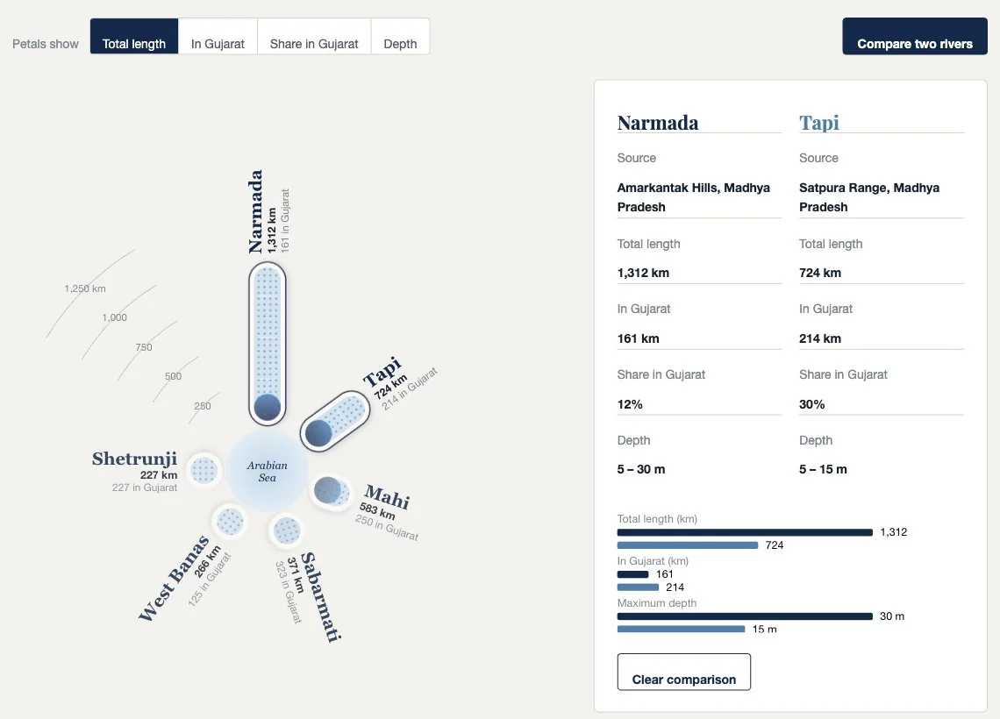
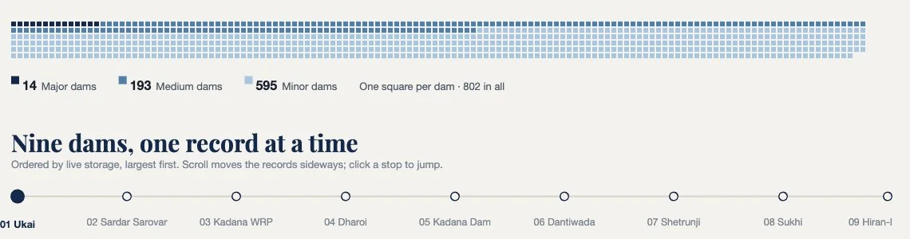
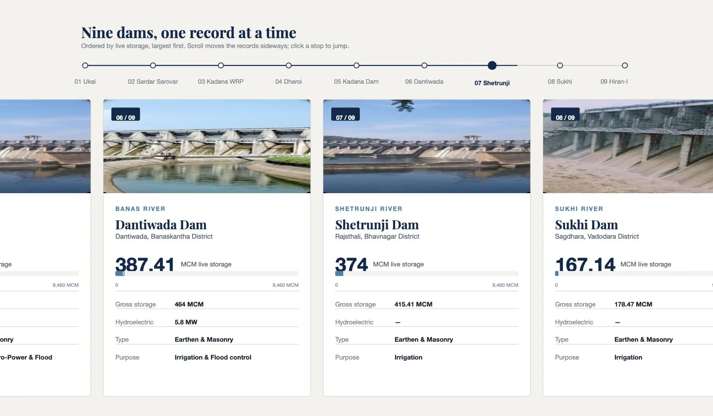

Route 03 · 6 stops
- Problem
- River, dam and pollution data for Gujarat sits across government and open sources. The site gathers it and makes it comparable.
- My role
- Solo: design, data gathering and front-end build with AI-assisted coding. Guided by Dr. Anupam Rana, M.Des IUxD.
- Key insight
- Let each chart’s shape carry the data: rivers drawn to scale, one square per dam.
- What I made
- A five-chapter scrolling story: district map, petals to scale, 47 rivers regrouped three ways, nine dam records, a pollution overview with BOD.
- Status
- Live on GitHub Pages, on phones, tablets and desktop. Pollution levels checked against CPCB’s 2018 report.
Stop 01 of 06
Choosing the topic
The module set no detailed brief: choose a topic and turn it into a data-visualisation website. I chose Gujarat’s rivers.
The question I set myself
How do you make a state’s water system readable: 185 rivers, 802 dams and 20 polluted stretches, spread across government and open sources?
With an open brief
There was no client and no fixed dataset. The topic, the scope and the story were mine to set.
What “readable” meant here
A reader should be able to find where the rivers are, compare them, sort them, and see what has been built on them and what has happened to them.
Stop 02 of 06
Sources and method
I compiled the data from government and open-source platforms, then simplified it for clarity and comparison. Rivers and dams are grouped by basin, flow direction and use.
185
rivers, 30 of them major
47
rivers with origin, direction and flow recorded
802
dams: 14 major, 193 medium, 595 minor
20
polluted river stretches (CPCB, 2018)
- Rivers and dams
- Central Water Commission (CWC) · India-WRIS (Water Resources Information System) · Government of Gujarat publications
- Pollution
- Central Pollution Control Board (CPCB), polluted river stretches, 2018: priority classes I to V by BOD level
- Maps
- District boundaries: INDIAN-SHAPEFILES (Census / LGD) · India outline: Survey of India, via Datameet · River courses: Natural Earth
Every source is listed on the live site, in its closing Methodology section.
Stop 03 of 06
Structuring 185 rivers
Five chapters, read in order: where the rivers are, how they compare, what kind they are, what has been built on them, and what has happened to them.
The map
Where are the rivers?
India, then Gujarat’s 33 districts, coloured by how many major rivers flow through each.
Major rivers
How do they compare?
Six major rivers drawn to scale from the sea upstream, with the stretch inside Gujarat marked.
River types
What kind of river is each?
47 rivers sorted by origin, flow direction and whether they flow all year.
Dams
What has been built on them?
802 dams as squares, then nine major dams as records, largest storage first.
Pollution
What has happened to them?
20 polluted stretches in CPCB’s five priority classes, with the BOD range for each.
Stop 04 of 06
From first layout to live site
My first layout was a long Figma page. In code, I kept the chapters and changed the charts.
First layout · Figma

What stayed
- The five chapters and their copy
- The headline numbers and the nine dam records
What changed
- A plain page instead of wave bands
- Rivers drawn to scale
- Charts built from the data, one square per dam
River types: from a web of lines to a question you choose


Each river has three types, so the reader picks one question at a time.
Pollution: from a pie template to CPCB’s own classes


The chart now uses CPCB’s five priority classes.
Stop 05 of 06
Interactions, chapter by chapter
One main interaction per chapter.
Chapter 1 · The mapHover a district, or pick a river

Districts shaded by how many major rivers cross them.
Chapter 2 · Major riversChange what the petals measure, or compare two

Petals drawn to scale; compare any two rivers.
Chapter 3 · River typesRegroup 47 rivers by one question
Dark tags are perennial rivers.
Chapter 4 · DamsFrom 802 squares to nine records


One square per dam, then nine records by storage.
Chapter 5 · PollutionClick a class for its stretches
Click a class to see its stretches.
Stop 06 of 06
Building it
Built in HTML, CSS and JavaScript with AI-assisted coding, and works on phones, tablets and desktop.
Closing
Let the shape of each chart carry the data.